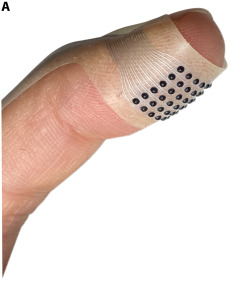

Qué es y qué beneficios aporta
VoxeLite es un prototipo presentado en noviembre de 2025 por un equipo de la Universidad Northwestern. Es un parche fino y flexible que se coloca en la yema del dedo. Tiene una cuadrícula de puntos diminutos que pueden presionar la piel para imitar texturas.
Lo he elegido porque el tacto puede dar información que normalmente recibimos al mirar una pantalla. Por ejemplo, un futuro mapa táctil podría ayudar a una persona ciega o con baja visión a seguir un camino con el dedo. Esa aplicación todavía es una posibilidad de investigación.

Cómo se usa
En las pruebas del equipo, la interacción funcionaba así:
- Colocar el parche. La persona se pone VoxeLite en la yema del dedo.
- Deslizar el dedo. Al pasar sobre la superficie de prueba, las señales eléctricas hacen que algunos puntos del parche se inclinen y presionen la piel.
- Distinguir el patrón. Según qué puntos se activen, el dedo nota sensaciones distintas. En el laboratorio, los participantes distinguieron texturas virtuales y señales de dirección.
Esto se llama respuesta háptica. El sistema devuelve información a través del tacto.
Cómo ha evolucionado la interacción
- Papel en relieve. El braille permite leer con los dedos gracias a puntos físicos. También hay materiales con dibujos en relieve.
- Vibración del móvil. Algunos teclados en pantalla dan una vibración breve al tocar una tecla. Así puedes notar que se ha registrado la pulsación.
- VoxeLite (2025). El parche activa puntos concretos en distintas zonas de la yema. Así puede crear un patrón táctil mientras deslizas el dedo.
¿Qué puede mejorar?
Un aviso por vibración te confirma que ha pasado algo. Con VoxeLite se investiga cómo dar una pista más detallada, como indicar una dirección o distinguir dos texturas. Si se llega a integrar en una pantalla, podría complementar las indicaciones visuales y sonoras.